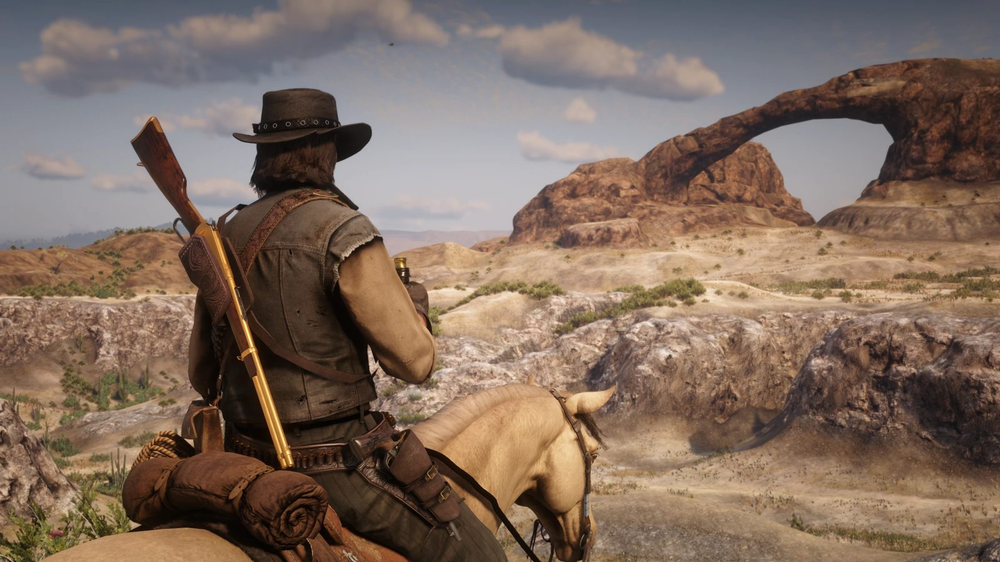
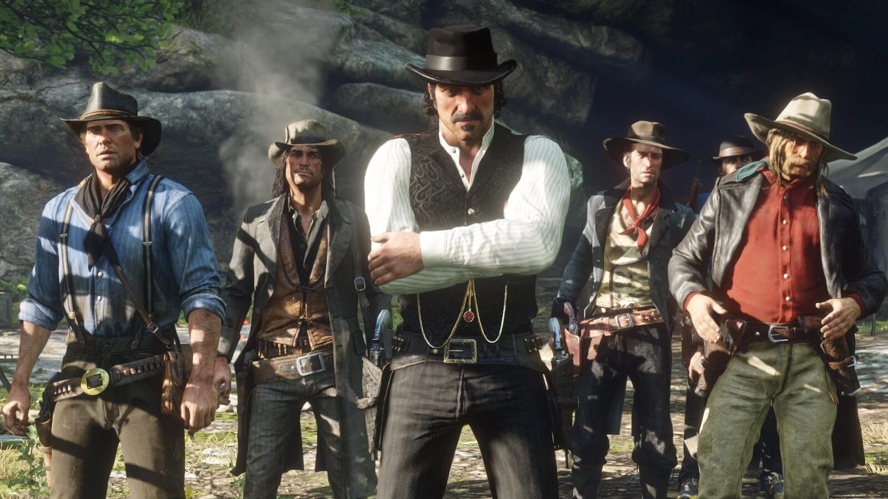
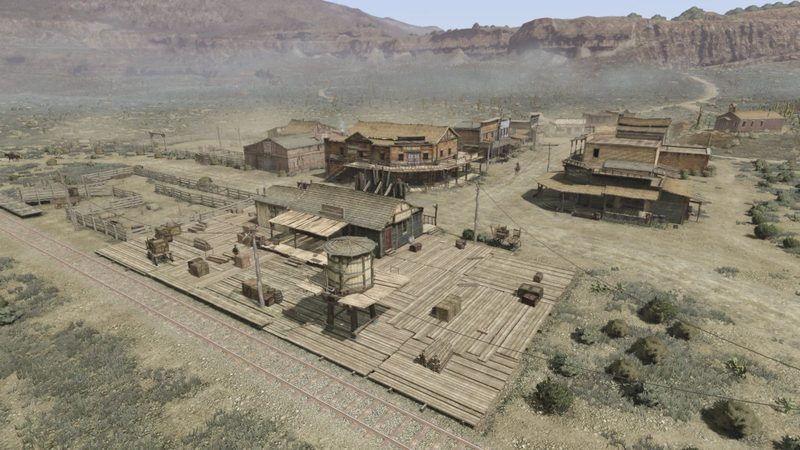

October 8, 2026 · Analysis RDR2 Next-Gen Update: What Has Actually Been Said in 2026 Still no PS5 and Xbox Series version of RDR2. Every insider claim since October 2025, dated and attributed, and what is actually confirmed. Read →
 October 5, 2026 · Community RDR2 Mexico Mod Nuevo Paraíso: What It Adds and Where It Stands With Rockstar A free fan mod brings RDR1's Mexico to RDR2 on PC, a week after Rockstar published mod rules that bar this kind of project. Read →
 August 10, 2026 · Industry Red Dead Redemption 2 Passes 87 Million Copies Take-Two's Q1 report puts RDR2 past 87 million units. The commercial case for RDR3, and what a third game would cost. Read →
1899 to 1907 · 6 chapters, 2 epilogues Red Dead Redemption 2 Chapter 1Colter Chapter 2Horseshoe Overlook Chapter 3Clemens Point Chapter 4Saint Denis Chapter 5Guarma Chapter 6Beaver Hollow Epilogue IPronghorn Ranch Epilogue IIBeecher's Hope Start with Chapter 1 →
 1911 to 1914 · 3 acts Red Dead Redemption Act INew Austin Act IINuevo Paraíso Act IIIWest Elizabeth Start with Act I →